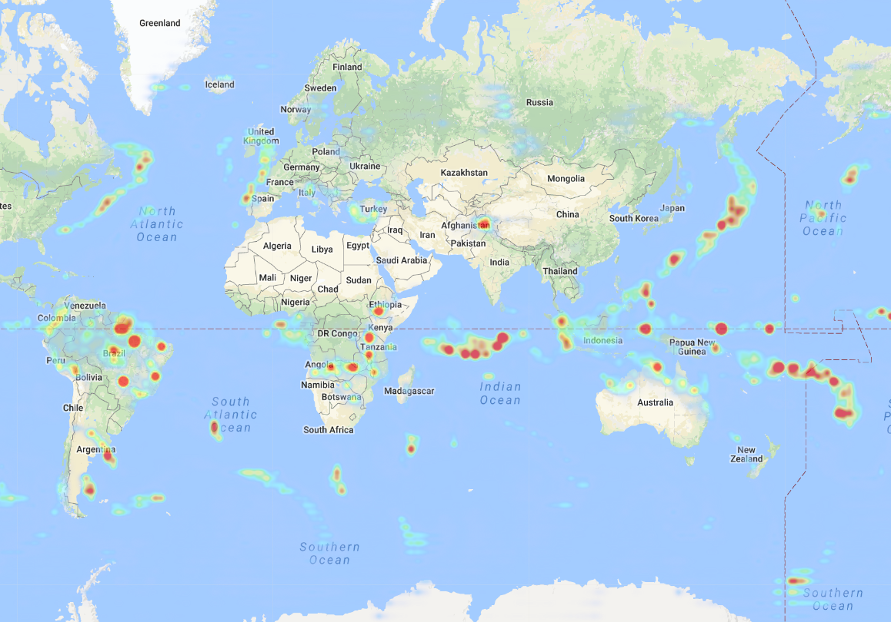

Latitude:
Longitude:
Frame:
Jump
Time:
0
×
Email sent!
×
Something wrong has happened, please try again.
Please contact us here to help improving our system:
Your name:
Your email address:
We'll never share your email with anyone else.
Your comment:
Submit
Feedback
MERRA-2 Blizzard
MERRA-2 Precipitation
NMQ Precipitation
TRMM Precipitation
Analysis
x is time in hours; y is precipitation in logarithmic scale.
Linear
Log10
10*Log10
Info
Click on the map to show the precipitation time series.
Datasets
MERRA-2 Blizzard

MERRA-2
NMQ
TRMM